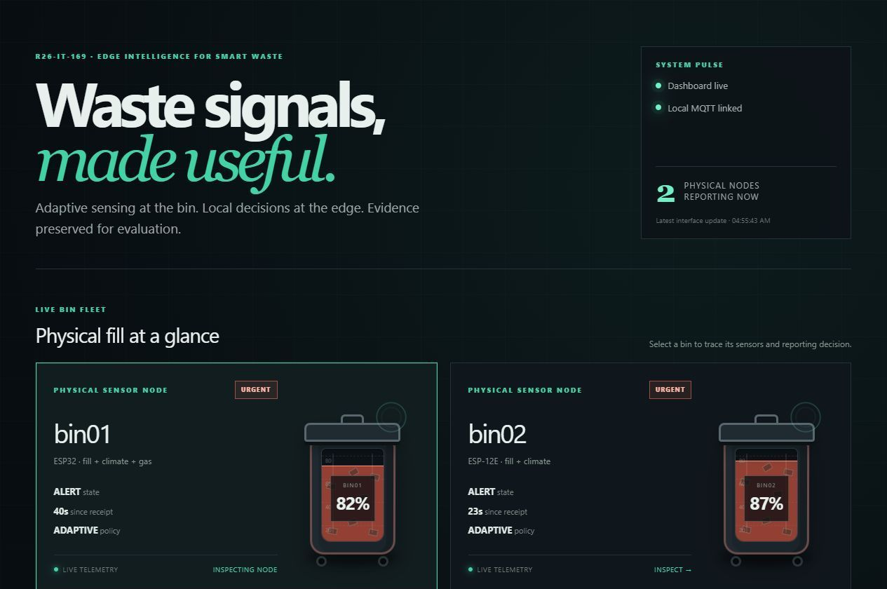
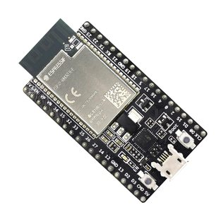
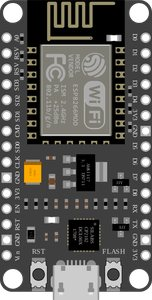
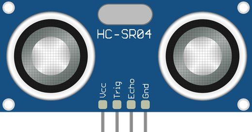
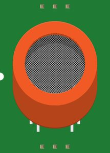
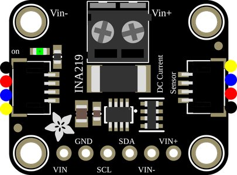

Abstract
IoT smart bins usually stream raw sensor readings to a server at a fixed rate. Most of those messages repeat what the server already knows, and on a battery-powered bin each transmission costs energy. This project moves the "should I send?" decision onto the bin itself. Each node runs a rule-based state machine that combines four mechanisms: a transmission interval that adapts to battery level (AIMD), a send-on-delta deadband that tightens when the bin fills quickly, an urgency override that always reports near-overflow or gas events, and a maximum data age per state so the server never loses track of a bin. A laptop-based edge gateway collects, validates and ranks the bins and feeds an operator dashboard. The system is evaluated against a fixed-interval baseline on the same hardware: in steady state the node sent 85.7% fewer messages, and both test alerts were reported within seconds.
How a node decides, every second
The node checks four states in a fixed order. Urgency is checked first, so saving energy never delays an alert.
Checked 1st
ALERT
Fill at 80% or more, gas above threshold, or filling faster than 10% an hour.
Sends at once, then at least every 60 s.
Checked 2nd
CONSERVE
Battery at 30% or less. Intervals grow to save energy.
Still reports at least every 15 min.
Checked 3rd
ACTIVE
Fill at 60% or more. The bin needs watching.
Reports at least every 5 min.
Otherwise
STABLE
Nothing is changing. The node stays quiet.
Reports at least every 30 min.
In every state the node also sends early when the fill moves by more than its deadband, which narrows from 10% towards 1% as the bin fills faster.
Results
85.7% fewer transmissions in steady state: 2 messages in 15 minutes against 14 for a fixed 60 s node (target: at least 60%).
2 of 2 alerts reported within seconds, with no false alerts.
Under a stress case with two alerts in 20 minutes the node sent more than the baseline. That is the urgency rule working as designed, made worse by a small test bin where one sensor step is 2.7% of fill.
Architecture
The prototype

Components
Each node is built from low-cost modules. bin01 carries the full sensor set; bin02 is the low-cost variant without the gas sensor.





Module illustrations from the Fritzing parts library and the Adafruit Fritzing library (CC BY-SA 3.0) and the Espressif esp-dev-kits documentation (CC BY-SA 4.0). They show each module type, not the exact boards used.
Explore
- Domain
Literature survey, research gap, objectives, methodology, results and technologies.
- Milestones
Every assessment with its date and mark allocation.
- Documents
Topic assessment, proposal, logs, checklists and the final documents.
- Presentations
Slides from the proposal, progress and final presentations.